Mobile Challenges
- Slow/No Network
- Complexity
NgRx Mobile
- Simplify our application
- Container/Presentation
- Easier to handle data as it shows up
Implementing NgRx
- Create Ionic app as usual
- Integrate angular-cli
- NgRx Schematics
- Use path aliases
Create our app
ionic start myApp
Angular CLI
- Copy an existing .angular-cli.json file
- rename the project
.angular-cli.json
{
"$schema": "./node_modules/@angular/cli/lib/config/schema.json",
"project": {
"name": "myApp"
},
"apps": [
{
"root": "src",
"outDir": "dist",
"assets": [
"assets",
"favicon.ico"
],
"index": "index.html",
"main": "main.ts",
"polyfills": "polyfills.ts",
"test": "test.ts",
"tsconfig": "tsconfig.app.json",
"testTsconfig": "tsconfig.spec.json",
"prefix": "app",
"styles": [
"styles.scss",
"theme.scss"
],
"scripts": [],
"environmentSource": "environments/environment.ts",
"environments": {
"dev": "environments/environment.ts",
"prod": "environments/environment.prod.ts"
}
}
],
"e2e": {
"protractor": {
"config": "./protractor.conf.js"
}
},
"lint": [
{
"project": "src/tsconfig.app.json",
"exclude": "**/node_modules/**"
},
{
"project": "src/tsconfig.spec.json",
"exclude": "**/node_modules/**"
},
{
"project": "e2e/tsconfig.e2e.json",
"exclude": "**/node_modules/**"
}
],
"test": {
"karma": {
"config": "./karma.conf.js"
}
},
"defaults": {
"styleExt": "scss",
"component": {},
"schematics": {
"collection": "@ngrx/schematics"
}
}
}
Add CLI and NgRx
/// install angular-cli
npm i @angular/cli --save-dev
// install ngrx
npm i @ngrx/{store,entity,effects,schematics}
/// install store freeze
npm i @ngrx/store-devtools ngrx-store-freeze --save-dev
Configure Schematics
ng set defaults.schematics.collection=@ngrx/schematics
Path Aliases
- long ../../../ paths are impossible
- path aliases simplify our code
- Easy to move and refactor
- tsconfig.json
Configure Schematics
"paths": {
"@state/*": [ "app/state/*" ],
"@core/*": [ "app/core/*" ],
"@app/*": [ "app/*" ],
"@assets/*": [ "assets/*"],
"@env": [ "environments/environment" ],
"@pages/*": [ "pages/*" ],
"@theme/*": [ "theme/*" ]
},
Paths still don't work
- Tell Webpack what to do...
webpack.config.js
const chalk = require("chalk");
const fs = require('fs');
const path = require('path');
const useDefaultConfig = require('@ionic/app-scripts/config/webpack.config.js');
const env = process.env.IONIC_ENV;
if (env === 'prod' || env === 'dev') {
useDefaultConfig[env].resolve.alias = {
"@app": path.resolve('./src/app/'),
"@state": path.resolve('./src/app/state/'),
"@core": path.resolve('./src/app/core/'),
"@assets": path.resolve('./src/assets/'),
"@pages": path.resolve('./src/pages/'),
"@theme": path.resolve('./src/theme/')
};
} else {
// Default to dev config
useDefaultConfig[env] = useDefaultConfig.dev;
useDefaultConfig[env].resolve.alias = {
"@app": path.resolve('./src/app/'),
"@state": path.resolve('./src/app/state/'),
"@core": path.resolve('./src/app/core/'),
"@assets": path.resolve('./src/assets/'),
"@pages": path.resolve('./src/pages/'),
"@theme": path.resolve('./src/theme/')
};
}
module.exports = function () {
return useDefaultConfig;
};
Jest
/// install jest
npm i jest-presets-angular --save-dev
jest.config.js
module.exports = {
preset: 'jest-preset-angular',
roots: ['src'],
setupTestFrameworkScriptFile: '<rootDir>/src/setup-jest.ts',
transformIgnorePatterns: ['node_modules/(?!@ngrx|@ionic-native|@ionic)']
}
setup-jest.ts
import "jest-preset-angular";
global["CSS"] = null;
Object.defineProperty(document.body.style, "transform", {
value: () => {
return {
enumerable: true,
configurable: true
};
}
});
Commands
// run tests
jest
// generate entity
ng g entity state/product --flat false
// generate component
ionic generate component products
// generate pages
ionic generate page products
Container-Presentation
Cordova Plugins
- Async
- Return a value or error
- Perfect for Effects
App & Code
BrieBug - What We do
- Architecture Reviews
- Angular Training
- Angular Consulting
15" MacBook Pro Give Away
Questions?
Jesse Sanders
@JesseS_BrieBug
jesse.sanders@briebug.com
@JesseS_BrieBug
jesse.sanders@briebug.com